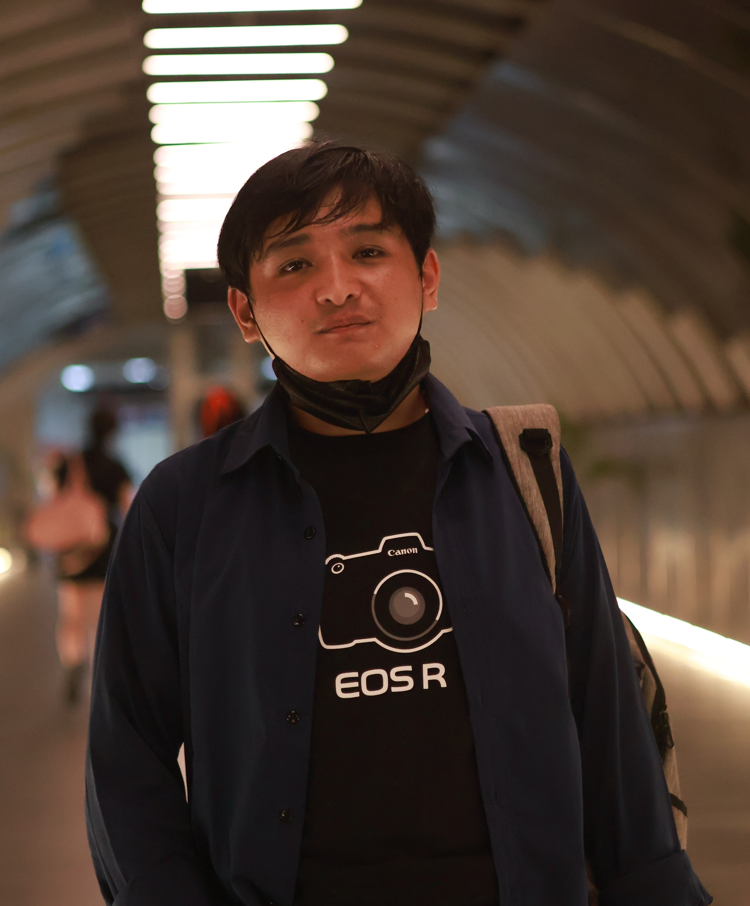

About Me

Hi, I'm Dion. A Software Developer and Data Engineer with focus on building practical and efficient solution connecting business and technology.
My technical stacks include Python, C#, PHP, SQL, along with experience in data analysis, ETL pipeline, API, and dashboard. Have built project ranging from object detection, RESTful API, machine learning, multi-database web application, to data and business simulation, making me versatile and all-rounder tech guy you can count wheter you need backend, frontend, database, AI, or data processing. Outside of techincal I also experienced in photography, video editing, and game design.
I am driven by growth, curiosity, possibility to create real positive impact through technology while continuously sharpening my analytical and engineering skill.
email me at: kurisudion@gmail.com